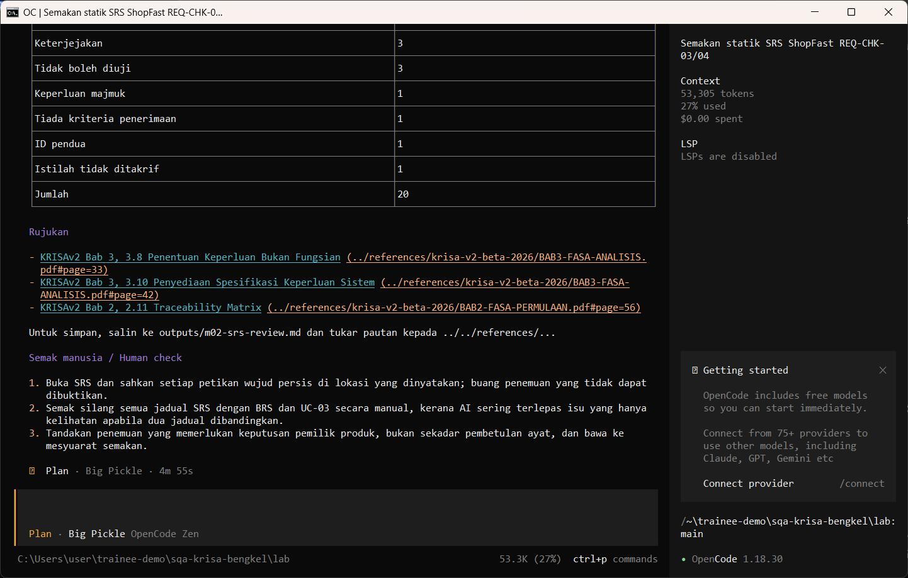
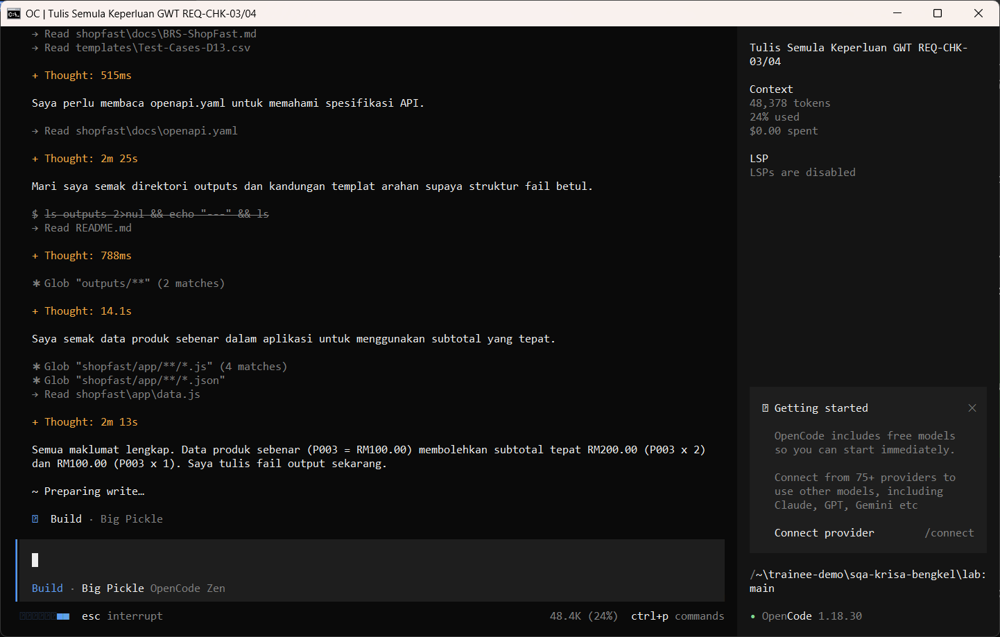
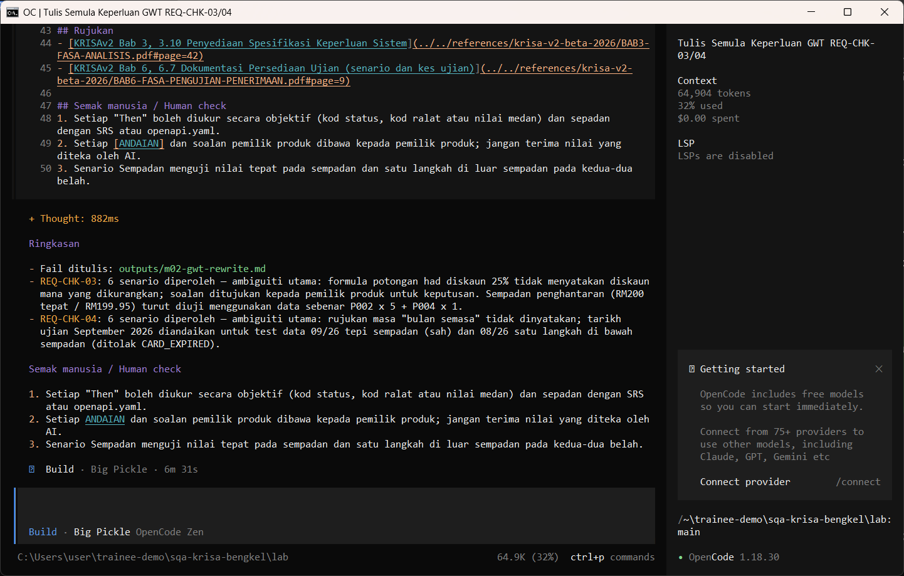
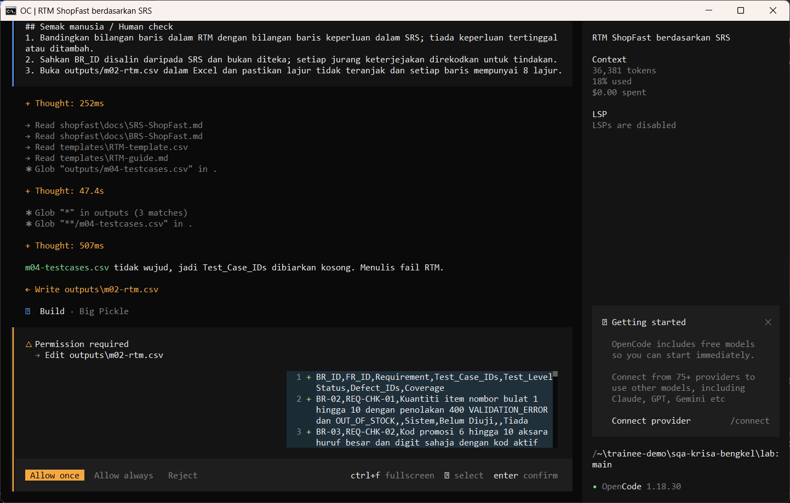
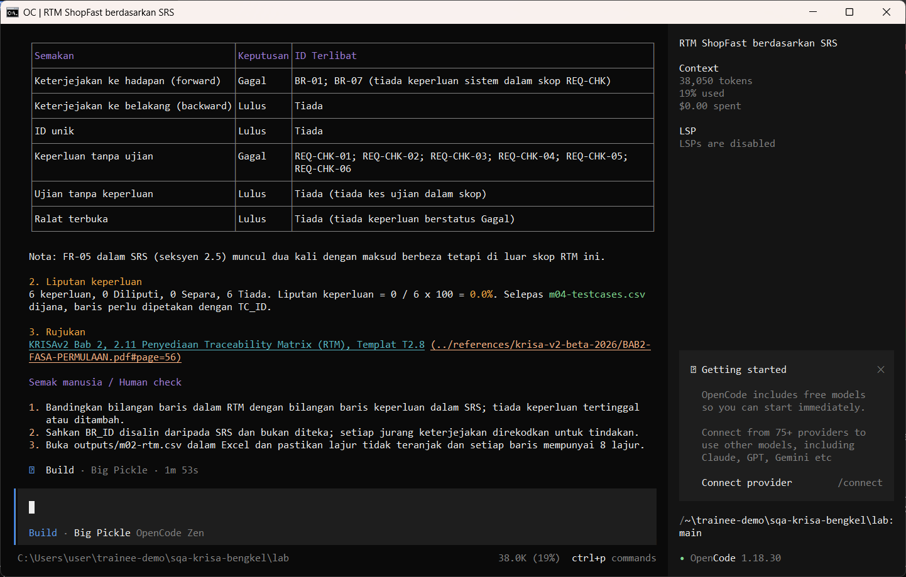
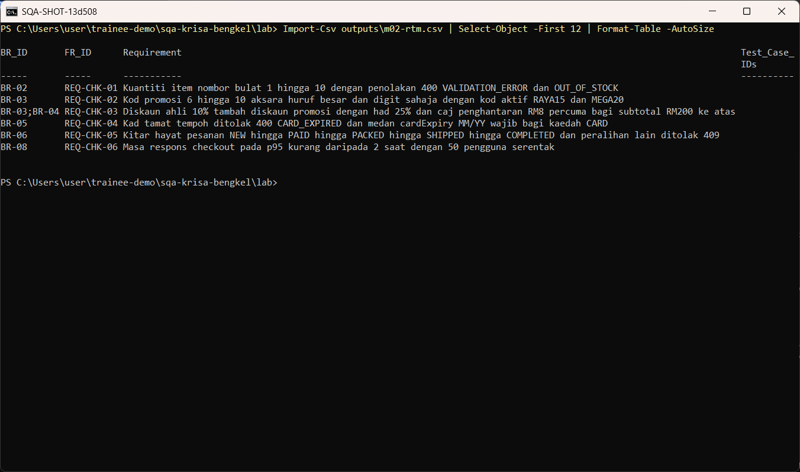

Matlamat / Goal
Biar AI membuat semakan statik SRS ShopFast yang bercacat berbanding BRS, menulis semula keperluan lemah dalam Given/When/Then dan mendraf RTM dalam CSV.
Let the AI statically review the flawed ShopFast SRS against the BRS, rewrite weak requirements as Given/When/Then and draft the RTM as CSV.
Peraturan data: guna data sintetik ShopFast sahaja. Model percuma dihoskan di luar negara. Output AI ialah draf yang mesti disemak manusia.
Langkah demi langkah dengan tangkapan skrin sebenar
Jalankan arahan semakan SRS dalam mod Plan. Ia membaca SRS, BRS dan panduan RTM dan memaparkan penemuan.
Run the SRS review command in Plan mode. It reads the SRS, BRS and RTM guide and prints findings.
/review-srs REQ-CHK-03 dan REQ-CHK-04
{kind=link}

Jalankan /rewrite-gwt dalam mod Build dan semak kebenaran menulis. AI membaca dokumen dahulu dan mungkin berhenti seketika pada Preparing write. Apabila dialog Permission required muncul, baca pratonton dan pilih Allow once.
Run /rewrite-gwt in Build mode and review the write permission. The AI reads the documents first and may pause at Preparing write. When the Permission required dialog appears, read the preview and choose Allow once.
/rewrite-gwt REQ-CHK-03 REQ-CHK-04
{kind=link}

Allow once. Tulis semula Given/When/Then disimpan.
Allow once. The Given/When/Then rewrite is saved.
Allow once (Enter)
{kind=link}

Jalankan /rtm untuk mendraf matriks kebolehkesanan. AI membaca dokumen dahulu dan mungkin berhenti seketika pada Preparing write. Apabila dialog Permission required muncul, baca pratonton dan pilih Allow once.
Run /rtm to draft the traceability matrix. The AI reads the documents first and may pause at Preparing write. When the Permission required dialog appears, read the preview and choose Allow once.
/rtm REQ-CHK-01 hingga REQ-CHK-06
{kind=link}

Allow once. CSV RTM disimpan.
Allow once. The RTM CSV is saved.
Allow once (Enter)
{kind=link}

Buka CSV dan bandingkan baris dengan ID keperluan SRS.
Open the CSV and compare the rows with the SRS requirement IDs.
Import-Csv outputs\m02-rtm.csv | Select-Object -First 12 | Format-Table -AutoSize
{kind=link}

Semakan manusia / Human check
- Setiap penemuan memetik teks yang benar-benar wujud dalam SRS
Every finding quotes text that really exists in the SRS - Setiap Given/When/Then mempunyai satu Then yang boleh diperhatikan
Each Given/When/Then has one observable Then - Baris RTM sepadan dengan ID keperluan dalam SRS, tiada yang direka
RTM rows match the requirement IDs in the SRS, none invented
Contoh output sebenar
Jawapan AI berbeza setiap larian. Bandingkan struktur dan semak kandungan.
Jika ada masalah / Troubleshooting
| Masalah | Tindakan |
|---|---|
| opencode is not recognised | Close and reopen PowerShell so PATH refreshes. Still failing: powershell -ExecutionPolicy Bypass -File .\setup\install-opencode.ps1 -Portable |
| Scripts are disabled on this system | Set-ExecutionPolicy -Scope CurrentUser RemoteSigned, or run opencode.cmd instead of opencode |
| The model is slow or stops | Wait up to 2 minutes. Press Esc to interrupt, then send the prompt again. Try another free model with /models |
| Permission required dialog | Read the preview. Choose Allow once for files in outputs/. Reject anything outside the lab folder |
| File or command not found | Check the status bar path ends with \lab. Commands and @files are relative to the lab folder |
| Answer uses Indonesian words or dashes | Reply: Ikut AGENTS.md peraturan 1 dan 14, tulis semula dalam Bahasa Melayu Malaysia |
| Network or proxy error | $env:HTTPS_PROXY = "http://proxy:port" and $env:NO_PROXY = "localhost,127.0.0.1" before starting opencode |
| Port 3000 already in use | $env:PORT = 3001 before npm start, and use http://localhost:3001 |